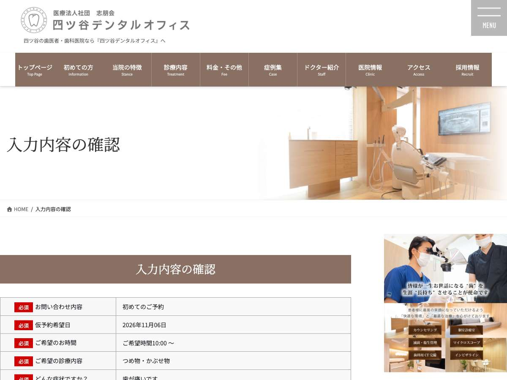
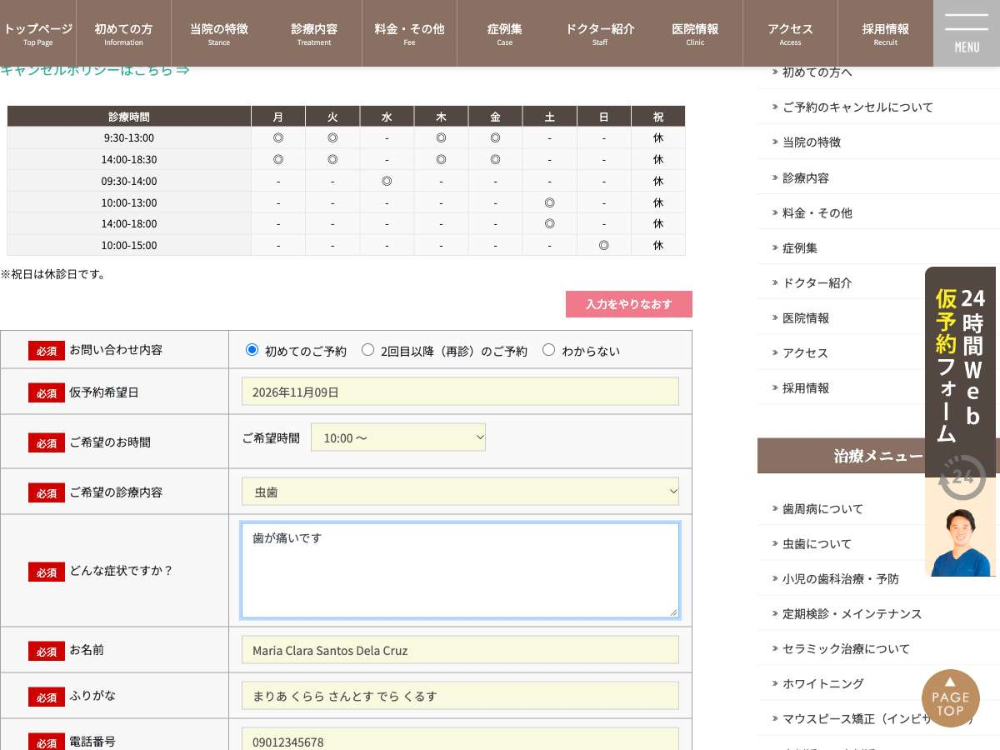

nanoru
Public page. Nothing was submitted.
1 of 5 tested names could not reach the review screen; 4 reached it. The Japanese baseline reached it.
Comparison
Same form, same goal, same contact details. Non-name choices (options, message) were left to the agent in this run and may differ between rows; see the run log. Names other than the baseline are name-format test cases, not verified identities. Recorded run, not live.
| Name | Outcome | First measured problem | Actions | Evidence |
|---|---|---|---|---|
山田 太郎 Japanese baseline (control) |
reached the review screen Confirmation screen 入力内容の確認 reached, showing 山田 太郎 and やまだ たろう; not clicking 送信する. |
no measured problem | 11 | screenshot |
Marsel Bait Latin letters only, no kanji, space between given and family name · test case |
reached the review screen Confirmation screen reached showing the entered name Marsel Bait and reading まーせる ばいと. The form has a single name field, so the full name went in it. I did not click 送信する. |
no measured problem | 11 | screenshot |
Maria Clara Santos Dela Cruz Long name with two middle names and spaces · test case |
stopped before the review screen The お名前 field rejected "Maria Clara Santos Dela Cruz" with the error 「文字数が正しくありません。」 (character count incorrect). I won't change the real name data. |
必須お名前 rejected 文字数が正しくありません。 |
11 | screenshot |
Sukarno Single name, no family name at all · test case |
reached the review screen The confirmation screen (入力内容の確認) is showing. It lists お名前 Sukarno and ふりがな すかるの. I did not click 送信する. |
no measured problem | 15 | screenshot |
Nguyễn Thị Hương Latin letters with diacritics · test case |
reached the review screen The confirmation screen (入力内容の確認) is showing the entered name Nguyễn Thị Hương and the reading ぐえん てぃ ふおん. I did not click 送信する. |
no measured problem | 15 | screenshot |
Ana García-López Hyphenated compound family name · test case |
reached the review screen 確認画面 reached, showing the name Ana García-López and the hiragana reading. I did not click 送信する. |
no measured problem | 11 | screenshot |
Evidence


Site defect, supported by evidence proposed by Claude from measured facts, not yet reviewed by a person
- Field
- お名前 (name=flname)
- Entered
Maria Clara Santos Dela Cruz- Kept by the field
Maria Clara Santos Dela Cruz- The page said
文字数が正しくありません。- What happened
- The single お名前 field kept the full 28-character name but showed the error 「文字数が正しくありません。」 (character count incorrect), and the form did not reach the confirmation screen. The baseline (山田 太郎) and shorter Latin names with spaces, up to 16 characters, all reached confirmation, so the rejection appears to come from length, not from spaces or Latin letters.
- Why it matters
- Maria Clara Santos Dela Cruz is a common Filipino name with two given names and a compound family name, and anyone with such a name may need to contact this business. She cannot shorten her real name to fit the form.
- Basis
- This behaviour is inconsistent with the guidance on p.27, which asks for a sufficient maximum length because foreign names need more characters. The guidance is scoped to Tokyo Metropolitan Government forms, and this is a private site. (applicable recommendation; GovTech Tokyo Input Form Guidance ver 1.1, p.27 Name (氏名), item 3: set a sufficient maximum length, because foreign names need more characters)
- Cause
- The rule was reproduced from behaviour, not confirmed in source: the input has no maxlength or pattern attribute, so a script or server-side check limits the character count. Passing and failing cases put the limit somewhere between 17 and 28 characters.
- Proposed repair
- In the validation for flname, raise the maximum character count to a generous bound such as 100, and keep the required (non-empty) check and that upper bound so genuinely invalid input is still rejected. A fix verified on a local reproduction verifies the reproduction only, not the live site.
Run details
山田 太郎 · 11 actions · reached the review screen
- fill n25
山田 太郎Fill full name before- 必須お名前: accepted
- fill n26
やまだ たろうふりがな field gets hiragana before- 必須ふりがな: accepted
- fill n27
09012345678Phone field before- 必須電話番号: accepted
- click n18 Select first inquiry option before
- click n21 Open date picker to choose a date before
- click n245 Pick first available date (6) before
- select n22
10:00 ～First valid time before - select n23
つめ物・かぶせ物First treatment option before - fill n24
歯が痛いですRequired symptoms field before- 必須どんな症状ですか？: accepted
- click n35 All required fields filled; go to confirmation before
- done n15 Confirmation screen 入力内容の確認 reached, showing 山田 太郎 and やまだ たろう; not clicking 送信する. before
Marsel Bait · 11 actions · reached the review screen
- click n18 Select first inquiry type before
- fill n21
2026-12-07Fill desired date before- 必須仮予約希望日: accepted
- click n247 Pick a date in the calendar so time options load before
- select n22
10:00 ～Pick first time before - select n23
つめ物・かぶせ物First treatment option before - fill n24
つめ物が取れましたRequired symptoms field before- 必須どんな症状ですか？: accepted
- fill n25
Marsel BaitFull name in single name field before- 必須お名前: accepted
- fill n26
まーせる ばいとふりがな field gets hiragana reading before- 必須ふりがな: accepted
- fill n27
09012345678Phone before- 必須電話番号: accepted
- click n35 Required fields filled; go to confirmation before
- done n15 Confirmation screen reached showing the entered name Marsel Bait and reading まーせる ばいと. The form has a single name field, so the full name went in it. I did not click 送信する. before
Maria Clara Santos Dela Cruz · 11 actions · stopped before the review screen
- fill n25
Maria Clara Santos Dela CruzFull name in the single name field before- 必須お名前: accepted
- fill n26
まりあ くらら さんとす でら くるすHiragana reading for ふりがな field before- 必須ふりがな: accepted
- fill n27
09012345678Phone number before- 必須電話番号: accepted
- click n18 Select first inquiry option before
- fill n21
2026-12-07Preferred date before- 必須仮予約希望日: accepted
- click n247 Pick a date from the calendar so the time options load before
- select n22
10:00 ～Pick first time option before - select n23
虫歯Required treatment field before - fill n24
歯が痛いですRequired symptoms field before- 必須どんな症状ですか？: accepted
- click n35 Proceed to confirmation screen before
- 必須お名前: rejected 文字数が正しくありません。
- stuck n25 The お名前 field rejected "Maria Clara Santos Dela Cruz" with the error 「文字数が正しくありません。」 (character count incorrect). I won't change the real name data. before
Sukarno · 15 actions · reached the review screen
- click n18 Select first inquiry type before
- fill n21
2026-12-15Enter a date before- 必須仮予約希望日: accepted
- click n247 Pick a date from calendar so time options load before
- select n22
10:00 ～First valid time before - select n23
虫歯Choose treatment before - fill n24
歯が痛いですRequired symptoms field before- 必須どんな症状ですか？: accepted
- fill n25
SukarnoSingle name entered in full name field; no family name exists before- 必須お名前: accepted
- fill n26
すかるのふりがな field gets hiragana reading before- 必須ふりがな: accepted
- fill n27
09012345678Phone before- 必須電話番号: accepted
- fill n28
test@example.comEmail before- 任意メール: accepted
- fill n29
test@example.comEmail confirmation before- 任意メール確認入力: accepted
- fill n30
1500001Postal code before- 任意郵便番号: accepted
- fill n31
東京都渋谷区神宮前1-1-1Address before- 任意住所: accepted
- click n35 Go to confirmation screen before
- done The confirmation screen (入力内容の確認) is showing. It lists お名前 Sukarno and ふりがな すかるの. I did not click 送信する. before
Nguyễn Thị Hương · 15 actions · reached the review screen
- fill n25
Nguyễn Thị HươngSingle full-name field; enter full name. before- 必須お名前: accepted
- fill n26
ぐえん てぃ ふおんFurigana field gets hiragana reading. before- 必須ふりがな: accepted
- fill n27
09012345678Phone field. before- 必須電話番号: accepted
- click n18 Select first inquiry option (required). before
- fill n21
2026-12-07Required desired date (a Monday). before- 必須仮予約希望日: accepted
- click n247 Pick a valid date in the calendar so the time options load. before
- select n22
10:00 ～First valid time. before - select n23
虫歯Required treatment field. before - fill n24
歯が痛いですRequired symptom field. before- 必須どんな症状ですか？: accepted
- fill n28
test@example.comEmail field. before- 任意メール: accepted
- fill n29
test@example.comEmail confirmation. before- 任意メール確認入力: accepted
- fill n30
1500001Optional postal code. before- 任意郵便番号: accepted
- fill n31
東京都渋谷区神宮前1-1-1Optional address. before- 任意住所: accepted
- click n35 Go to confirmation screen. before
- done n15 The confirmation screen (入力内容の確認) is showing the entered name Nguyễn Thị Hương and the reading ぐえん てぃ ふおん. I did not click 送信する. before
Ana García-López · 11 actions · reached the review screen
- click n18 Select first inquiry type before
- click n21 Open date picker to choose a date before
- click n247 Choose first available date (Nov 9) before
- select n22
10:00 ～Pick first time before - select n23
虫歯Choose treatment before - fill n24
歯が痛いですRequired symptoms field before- 必須どんな症状ですか？: accepted
- fill n25
Ana García-LópezFull name in single name field before- 必須お名前: accepted
- fill n26
あな がるしあ ろぺすふりがな field takes hiragana before- 必須ふりがな: accepted
- fill n27
09012345678Phone required before- 必須電話番号: accepted
- click n35 Proceed to confirmation screen before
- done n15 確認画面 reached, showing the name Ana García-López and the hiragana reading. I did not click 送信する. before